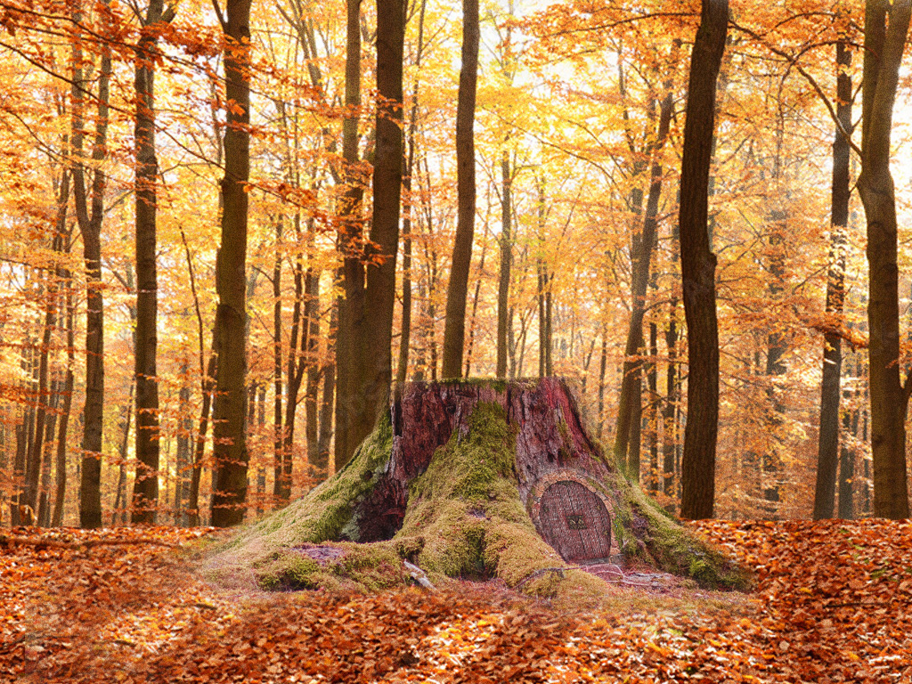
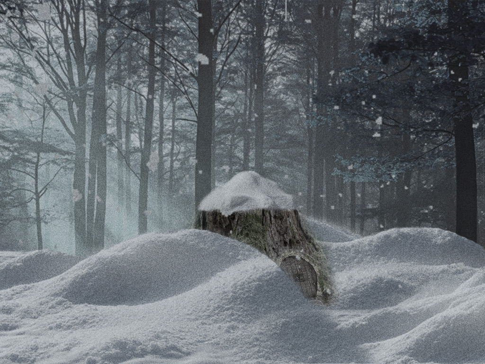
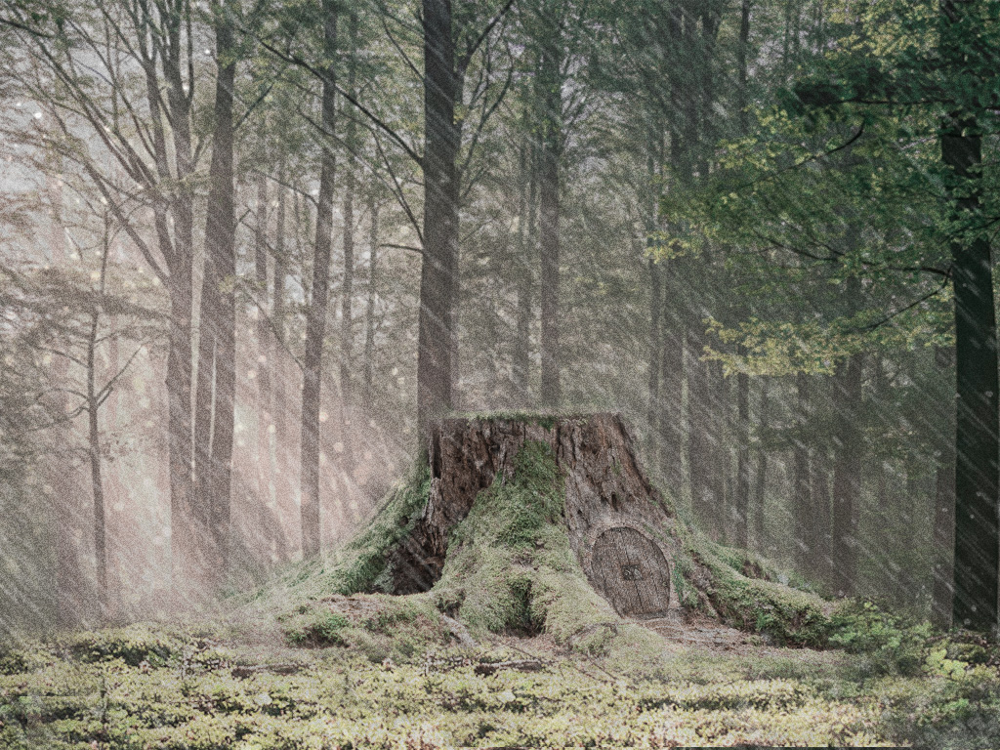
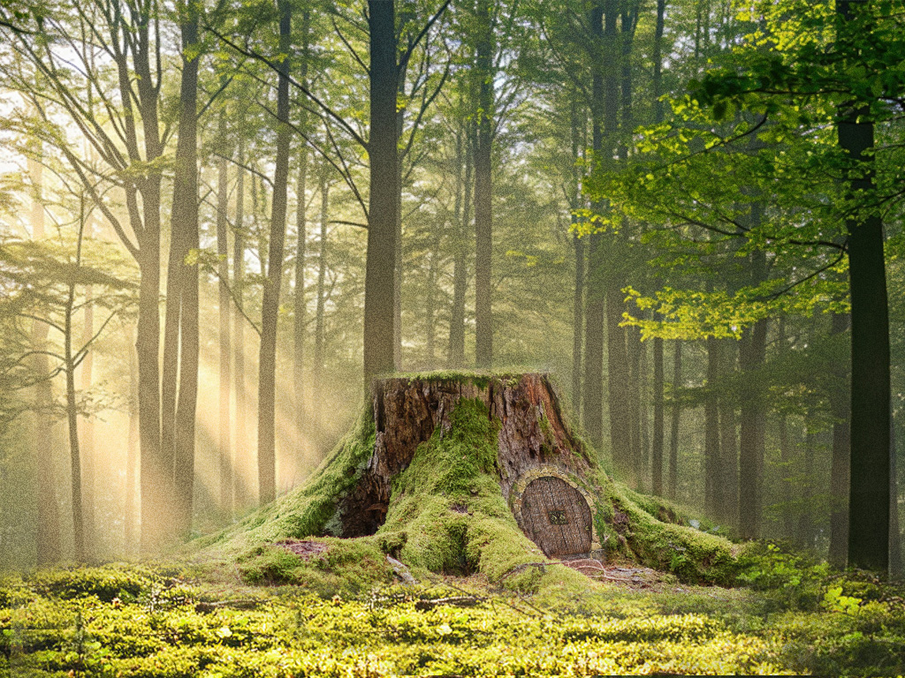
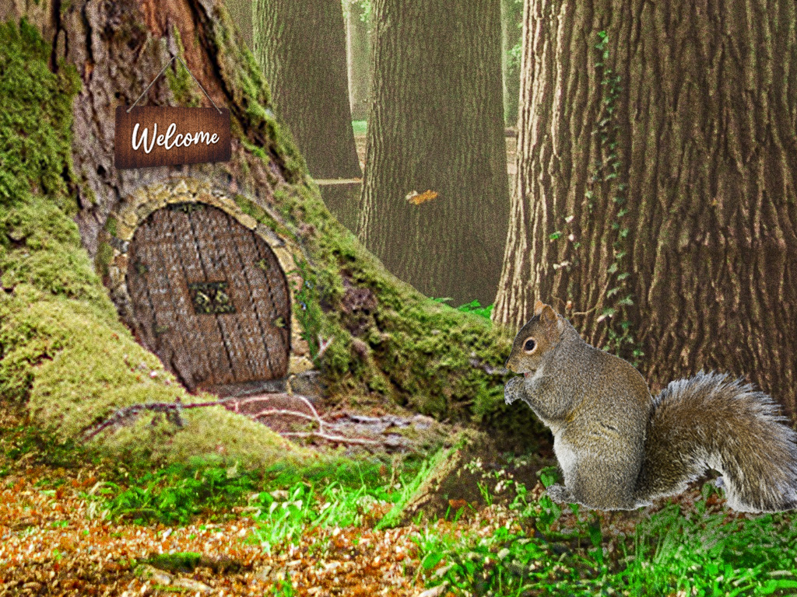

Lesson 8 Photoshop Design Project
For this design project I wanted to
highlight how the world around you may change without
you but your impact is still felt.
I illustrated this by having the little squirrel's
house endure the four seasons and for him to return home
in the summer to see his house still standing.




